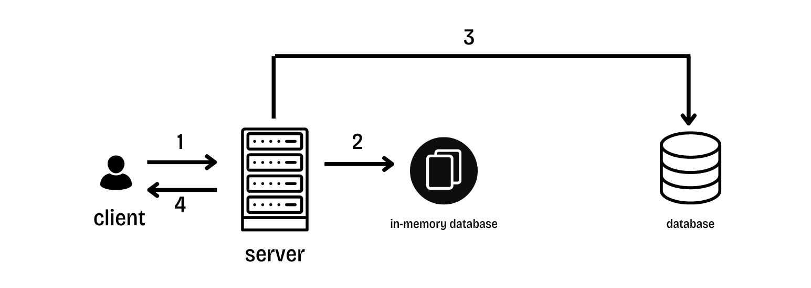

Charged twice? Not nice!
Olaoluwa Oke| 10 June 2024
I used to work at SkipTheDishes , and we had this hilarious thing happen all the time , Customers would call in absolutely livid about being charged twice for the same order or having one order duplicated. (What would they do with two birthday cakes). They would swear up and down that they only placed one order. We heard this so often that we even had a name for it: "Phantom Charge." We usually blamed it on a glitchy internet connection, but what was really happening , What mysteriousness could be causing this double charges , double orders, Honestly , I don't know too exactly, Hell , it could be poor thread management, But what?
Sure, a wonky internet connection can be the culprit. But there’s more to the story.
First off, let’s talk about server errors. Imagine this: the server is happily processing the order when suddenly, something goes wrong. The customer is left in the dark, unsure if their order went through. If they try again, they might end up with two orders (and two charges).
Then there’s the network error scenario. The server successfully processes the order, but thanks to a network hiccup, the confirmation doesn’t make it back to the customer. They’re left wondering if their order was a success and might hit that order button again, leading to—you guessed it—a double charge.
Now, how did SkipTheDishes deal with this? Honestly, I’m not sure because I left before the fix was in. But let’s talk about a genius solution they might have used: the idempotent API.
SkipTheDishes was hemorrhaging money on double orders and transaction fees from refunds. Enter the idempotent API, a simple solution. It ensures that a request can be retried multiple times without any side effects. One request gets processed exactly once, no matter how many times it’s retried. Here’s how they could have pulled it off
1. idempotent Keys
They’d only process a request if it hadn’t been processed already. To do this, they’d use unique strings (UUIDs) as idempotency keys, sent with each request’s HTTP header. New request? New UUID. These keys act like fingerprints to check if a request has been processed. These idempotency keys would be stored in an in-memory database on the server. Once a request is processed, its response is cached. When a request comes in, the database is queried to see if it’s new. If it’s new, it gets processed and its key is stored. If not, the cached response is returned. They’d also roll back any transactions if a server error happens. To save on storage costs and allow time for retries, idempotency keys would be removed after 24 hours, making them reusable after that period.
Here’s the play-by-play:
Request Sent: The customer sends a request to place an order.
Server Checks In-Memory Database: The server looks for the idempotency key in the in-memory database.
Key Present: If the key is found, the server sends the cached result of the processed request.
Key Not Present: If the key isn’t found, the server processes the request, sends the response to the customer, and stores the key in the database.
They’d also roll back any transactions if a server error happens. To save on storage costs and allow time for retries, idempotency keys would be removed after 24 hours, making them reusable after that period.

2. Retrying Failed Requests
Even though retrying with an idempotency key is safe, it could still overwhelm the server with requests. So, they’d use the exponential backoff algorithm. This means adding a delay before retrying each failed request. To prevent a thundering herd problem, where many clients try to reconnect simultaneously, they’d use jitter to add randomness to the waiting time before a retry.
And that’s how an idempotent API could have turned those Phantom Charges into a thing of the past at SkipTheDishes. No more double orders, no more extra charges, just happy customers all around.
Page 1 of 1
© Olaoluwa